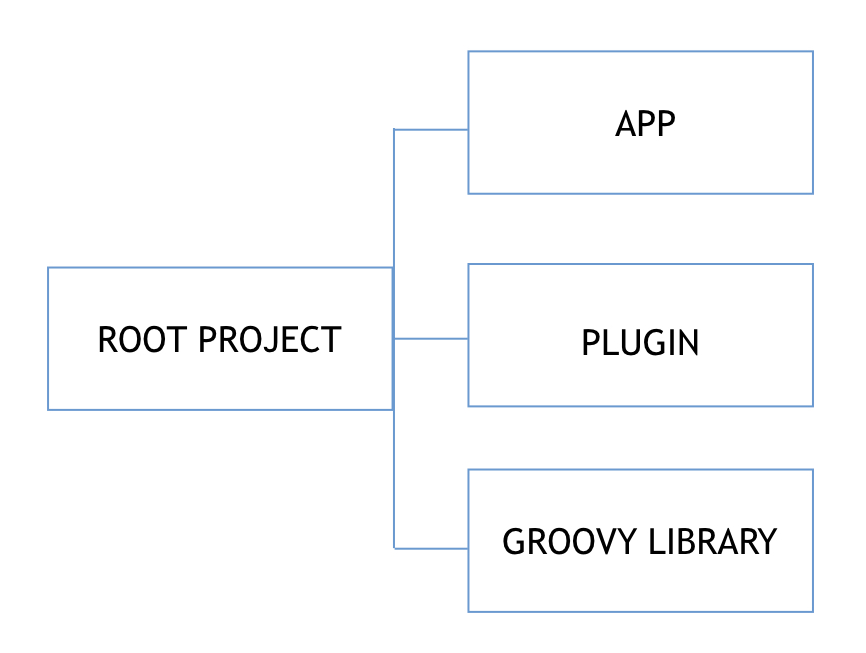
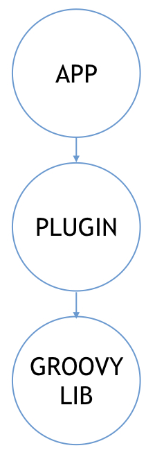
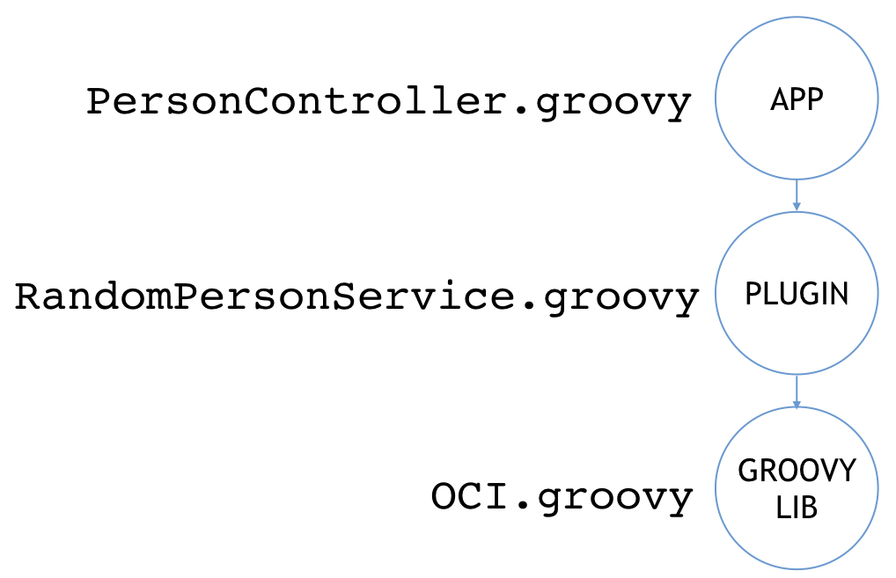

Grails Multi-Project Build
Learn how to leverage Gradle capabilities in a Grails application to create Multi-Project builds
Authors: Sergio del Amo
Grails Version: 4
1 Grails Training
2 Getting Started
In this guide, you are going to create a multi-project build from scratch. We are going to combine a Grails App, a Grails Plugin, and simple Groovy Lib.
2.1 What you will need
2.2 How to complete the guide
3 Writing the Application
Grails uses the Gradle Build System for build related tasks such as compilation, runnings tests and producing binary distrubutions of your project.
Gradle powerful support for multi-project builds is one of Gradle’s unique selling points.
A multi-project build in Gradle consists of one root project, and one or more subprojects that may also have subprojects.
3.1 Overview
We are going to create an app which combines a Grails App build with the
web profile, a Grails Plugin with the plugin profile and a plain Groovy library.

3.2 Create Projects
Create root project
$ mkdir multiproject
$ cd multiprojectCreate Grails App with web profile
multiproject$ mkdir app
multiproject$ cd app
multiproject/app$ grails
grails> create-app --profile web --inplace
| Application created at multiproject/app
| Resolving Dependencies. Please wait…
CONFIGURE SUCCESSFUL
Total time: 12.262 secs
grails> exit
multiproject/app$ cd ..Create Grails Plugin with plugin profile
multiproject$ mkdir plugin
multiproject$ cd plugin
multiproject/plugin$ grails
grails> create-app --profile plugin --inplace
| Application created at multiproject/plugin
| Resolving Dependencies. Please wait…
CONFIGURE SUCCESSFUL
Total time: 12.262 secs
grails> exit
multiproject/plugin$ cd ..Create Groovy Lib
multiproject$ mkdir groovylib
multiproject$ cd groovylib
multiproject/groovylib$ touch build.gradleCreate a build file for the Groovy Lib:
link:../snippets/groovylib/build.gradle[role=include]Move Gradle files to Root Project
multiproject$ mv app/gradlew .
multiproject$ mv app/gradlew.bat .
multiproject$ mv app/gradle.properties .
multiproject$ mv app/gradle .Add projects to settings.gradle
link:../snippets/settings.gradle[role=include]Remove unnecessary files
Clean-up plugin folder
multiproject$ rm plugin/gradlew
multiproject$ rm plugin/gradlew.bat
multiproject$ rm plugin/grailsw.bat
multiproject$ rm plugin/grailsw
multiproject$ rm plugin/grailsw.bat
multiproject$ rm plugin/grails-wrapper.jar
multiproject$ rm plugin/settings.gradle
multiproject$ rm plugin/gradle.properties
multiproject$ rm -rf plugin/gradle
multiproject$ rm plugin/.gitignoreClean-up app folder
multiproject$ rm app/grailsw
multiproject$ rm app/grailsw.bat
multiproject$ rm app/grails-wrapper.jar
multiproject$ rm app/settings.gradle
multiproject$ rm app/.gitignore3.3 Projects' dependencies
We want to configure the next dependencies:

App dependencies
app depends on plugin. You can express it in the dependencies block such as:
dependencies {
...
compile project(':plugin')
}or with:
link:../snippets/app/build.gradle[role=include]Plugin dependencies
plugin depends on groovylib
dependencies {
...
link:../snippets/plugin/build.gradle[role=include]
}3.4 Open project in IDE
You can open you Grails multi-project build with an IDE such as IntelliJ IDEA by
telling the IDE to open the multiproject folder.
Once the project is imported you will see such as window:
{kind=link}
3.5 Code in multiple projects
We are going to add code to different projects to verify the multi-project build is working.

link:../snippets/app/grails-app/controllers/app/PersonController.groovy[role=include]link:../snippets/plugin/grails-app/services/demo/RandomPersonService.groovy[role=include]link:../snippets/groovylib/src/main/groovy/demo/OCI.groovy[role=include]To verify our app, we use the Rest Client Builder Grails Plugin.
Add the plugin to our app dependencies:
link:../snippets/app/build.gradle[role=include]link:../snippets/app/src/integration-test/groovy/app/PersonControllerSpec.groovy[role=include]3.6 Keep your build dry
If you compare app/build.gradle and plugin/build.gradle you will see a lot of duplication.
To remove duplication, we are going to add a ROOT build.gradle
link:../snippets/build.gradle[role=include]the app and plugin gradle files are really simple:
link:../snippets/app/build.gradle[role=include]
dependencies {
link:../snippets/app/build.gradle[role=include]
}
link:../snippets/app/build.gradle[role=include]link:../snippets/plugin/build.gradle[role=include]
dependencies {
link:../snippets/plugin/build.gradle[role=include]
}3.7 Features as Gradle files
Another possibility to keep your build dry is to create specific Gradle files for different features.
Imagine you have Geb tests in several projects of your multi-project build.
We can encapsulate a set of dependencies to run Geb tests for multiple browsers.
link:../snippets/gradle/geb.gradle[role=include]Then you can apply these dependencies to a particular project:
apply from: "${rootProject.projectDir}/gradle/geb.gradle"4 Running the Application
To run the app:
./gradlew app:bootRunTo run tests:
./gradlew check